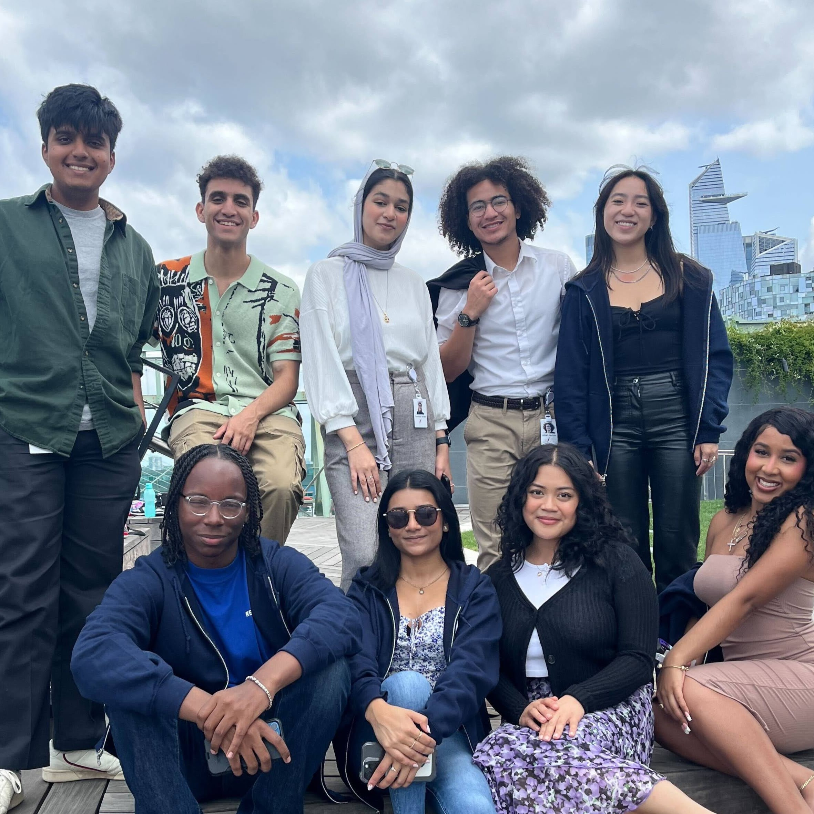

Early on, I struggled to find community at home or in my neighborhood, so I looked to do so at school. With this came a drive to see myself succeed—and a dedication to see those around me do the same—in an environment in which each of us could challenge ourselves for the better. Many of my personal and career involvements revolve around being in community with others for the sake of collective learning and growth. I thrive in positions where I could lead and own this type of work, or develop solutions with others just as determined, insightful, and passionate as I am.
I intend on joining the tech sector after graduation(May 2025), in a Product Management capacity. For me, Product Management combines and complexifies my interests in tech, with my experience leading teams and my analytical savvy, forming a day-to-day that I find truly fulfilling.
My first experience within the realm of Product was at Vivian Health this past summer(summer 2023), where I was enabled to learn and grow at each step of the product lifecycle. I was placed as a product manager on the Loyalty team at Vivian, and our surface area consisted of consumer rewards and retention. I drove a currently live feature(Vivian VIP) from opportunity validation through to launch coordination and shipped it by participating in 2-week sprints, in which we did sprint planning and sprint recaps, utilizing agile methods and scrum along the way. At Vivian I had the amazing opportunity to interact and influence multiple different aspects of the business: working with Vivian user researchers to conduct user interviews and A/B tests: was physically on the Figma board with my team’s designer for Vivian VIP: coordinating with engineers, both back-end and front. I also collaborated with the Product Managers of other teams to help construct PRDs, and get the feature launch ready.
I seized this opportunity with Vivian Health through the IAC Fellows program, a highly selective summer internship program that enables high-achieving students from under-resourced communities to jumpstart their careers in tech. With the support of the IAC Fellows program, I was able to network with professionals across the industry, diversify and expand my understanding of Product, and form career-long connections with the fellows I had the pleasure of working alongside this summer. IAC holds several tech/media brands in its portfolio, including Angi, Dotdash Meredith, Investopedia, and Vivian Health.

I hold numerous student-work positions at Reed that I've come to deeply cherish during my time here. Not only am I gaining valuable and varied workplace experience, but I am also able to support my fellow Reedies all the while. I work as a student coordinator at our campus gym and as a House Advisor(RA) for the Foster dorm hall. In both of these roles, I am tasked with ensuring the safety and integrity of the spaces themselves; although, I devote much of my energy towards fostering community among my patrons and residents—transforming these physical places into spaces in which people can feel comfortable enough to do their very best, and be supported all the while. I am also the lead tour guide for The Office of Admissions, providing training, insights, and mentoring for our cohort of student tour guides, coordinating large-scale events, and liaising between student staff and professional staff for daily/special operations.
I am a current SEO college scholar, MLT fellow, Chess in The Schools alumni, IAC fellow, and ColorStack national member.